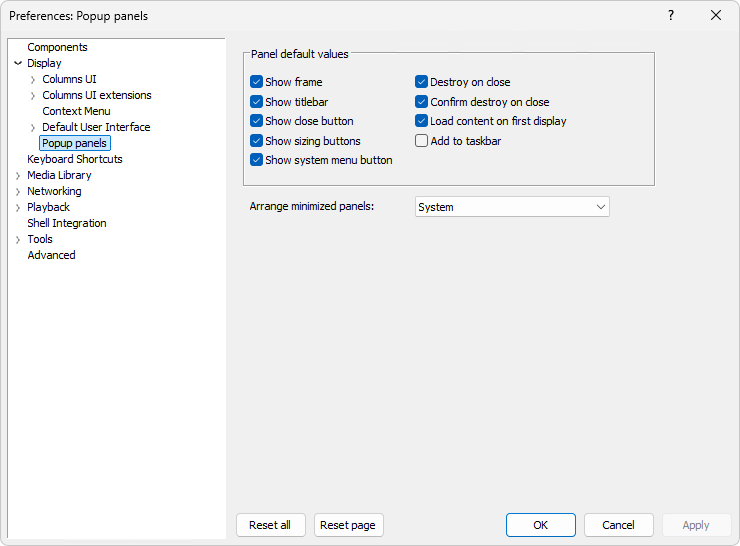

Open Preferences > Display > Popup panels to configure
the default behavior of popup panels.

Applying changes
Changes made on this page are pending until you select
Apply in the foobar2000 Preferences dialog. Use
Reset to restore this page's defaults; apply the reset if
you want those values saved.
The window-style, close, content-loading, and taskbar options below are
defaults for newly created popups. They do not change existing popups;
configure those individually using the
Configure dialog. The minimized-panel
arrangement option is an exception: applying a changed arrangement also
repositions currently minimized popup panels.
Panel default values
These options determine the initial settings copied into each new popup.
Show frame
Shows or hides the popup window frame. Default: On.
Show titlebar
Shows or hides the popup title bar. Default: On.
Show close button
Controls whether new popups have a close button. Turning this off also
turns off the system-menu button and sizing buttons. Default: On.
Show system menu button
Controls whether new popups show the system-menu button in the title bar.
This is a default for newly created popups; it does not change the button
on existing panels. Default: On.
Show sizing buttons
Controls whether new popups have sizing buttons. Default: On.
Destroy on close
When enabled, closing a popup destroys it. When disabled, closing hides
it so it remains available in the background. Default: On.
Confirm destroy on close
Controls whether closing a popup that is set to be destroyed prompts for
confirmation. The prompt lets you keep the popup hidden in the background
instead of destroying it. Default: On.
Load content on first display
Defers creating the hosted extension until the popup is first shown. This
can avoid loading the panel content for a popup that remains hidden.
Default: On.
Add to taskbar
Controls whether new popup panels appear as taskbar windows. Default: Off.
Arrange minimized panels
Select how minimized popup panels are positioned. The
System option leaves their placement to Windows. The
directional options arrange minimized panels relative to the foobar2000
main window, starting at the named corner and proceeding in the named
direction. If the panels do not fit along that edge, placement continues
on another line or column in the direction indicated by the option.
System
Use the system-managed minimized-window placement.
Top left right
Start at the top-left and proceed right; continue on the next line downward.
Top left down
Start at the top-left and proceed downward; continue in the next column to the right.
Top right left
Start at the top-right and proceed left; continue on the next line downward.
Top right down
Start at the top-right and proceed downward; continue in the next column to the left.
Bottom left right
Start at the bottom-left and proceed right; continue on the next line upward.
Bottom left up
Start at the bottom-left and proceed upward; continue in the next column to the right.
Bottom right left
Start at the bottom-right and proceed left; continue on the next line upward.
Bottom right up
Start at the bottom-right and proceed upward; continue in the next column to the left.
When you apply a changed arrangement, currently minimized popup panels are
repositioned using the selected option.